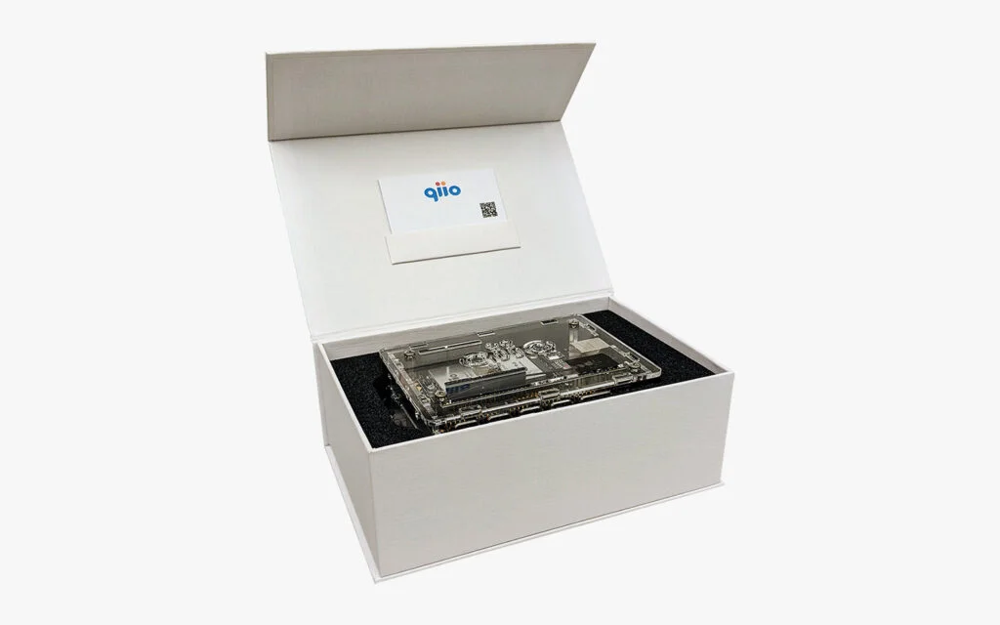

qiio is proud to present PoC in a Box, the world’s first, fastest and most
secure way to realize cellular IoT solutions.
Start your IoT journey today with qiio’s PoC in a Box. Everything you need to realize your IoT projects is
in one box! PoC in a box is available immediately.
Combining qiio’s cellular expertise with Microsoft security
Prototype in record time
Full integration in IoT Central
To know more about PoC in a Box, please check our product page.
Get your own PoC in a Box by contacting sphere@qiio.com.